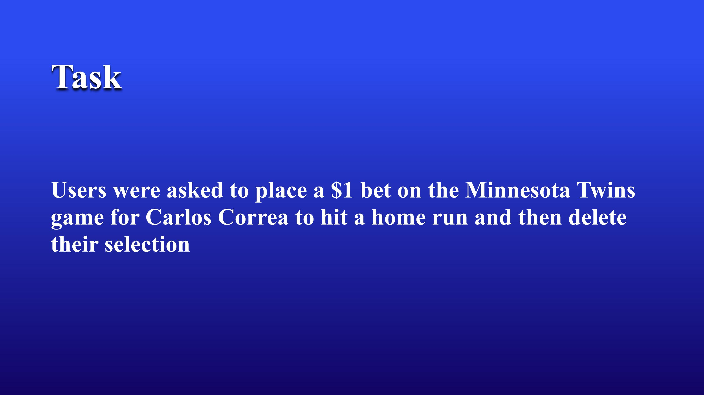
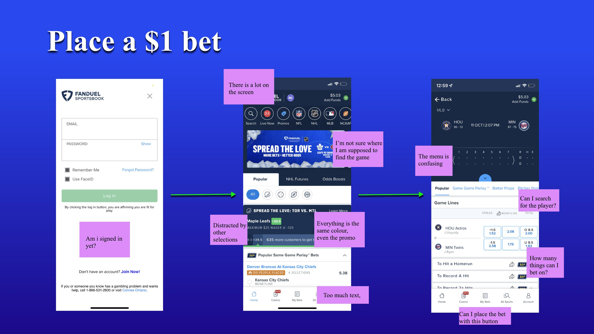
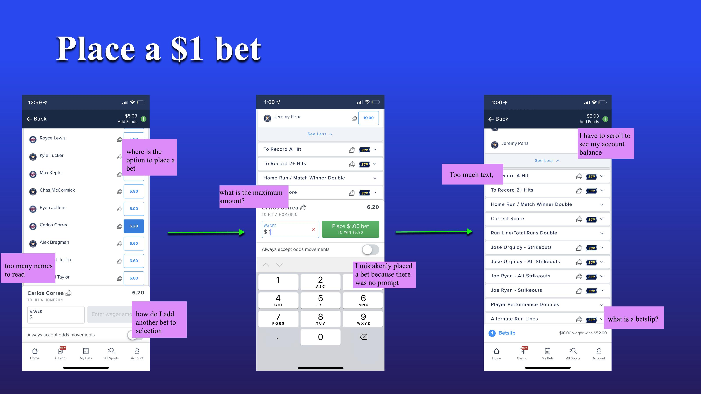
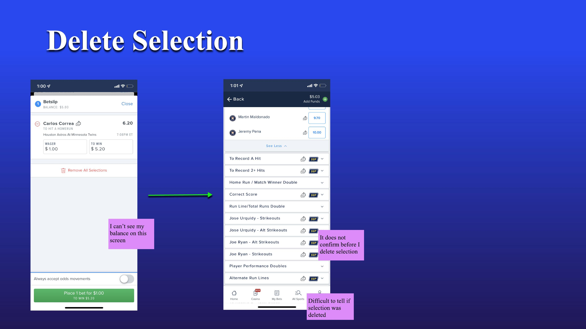
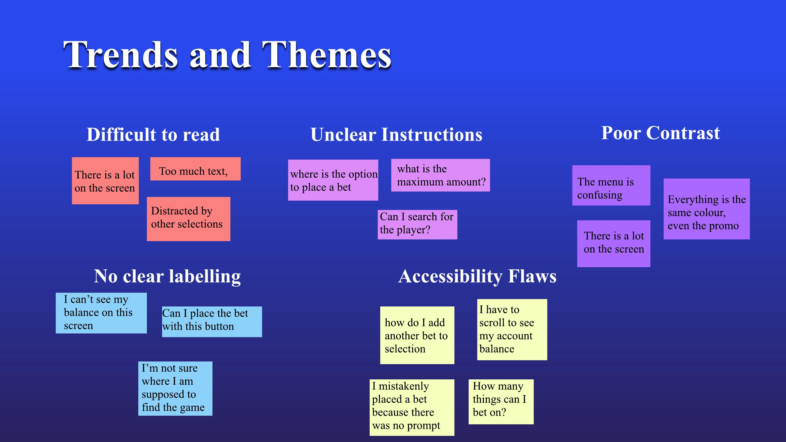

Redesigned Fanduel screens — Home, Sport Selection, Betslip, and Cashout
A structured usability audit of one of North America's biggest sports betting apps. Documenting exactly where and why the experience breaks down, then designing a cleaner path forward.
Fanduel is one of the leading sports betting platforms in North America, offering bets across basketball, football, hockey, and more. Sports betting apps face a unique UX challenge. Their audience ranges from first-time casual users to seasoned daily bettors. A confusing interface isn't just frustrating; the stakes are literally financial.
I conducted this audit as part of an inclusive design course, with a focus on surfacing usability barriers that affect a broad range of users, not just power users who've learned to navigate around the app's rough edges.
Users were given a specific scenario: place a $1 bet on the Minnesota Twins game for Carlos Correa to hit a home run and then delete the selection.
Simple on paper. In practice, this task exposed friction at every single stage of the flow.


I captured the actual thoughts users voiced during the task. These aren't interpretations, they're direct quotes from sessions:
"There is a lot on the screen."
"I'm not sure where I am supposed to find the game."
"The menu is confusing."
"Everything is the same colour, even the promo."
"I have to scroll to see my account balance."
"What is a betslip?"
"I mistakenly placed a bet because there was no prompt."
"It does not confirm before I delete my selection."


The top section combines promos and games in the same colour. Users can't distinguish what's an ad from what's a bet.
After using the "popular games" filter, the "popular same game bet" section opens by default, forcing users to scroll past irrelevant content.
Account balance requires scrolling to find. It's not visible at a glance on key screens.
Users clicked "My Bets" when trying to place a bet. The distinction between betslip and bet placement was completely unclear.
Clicking "back" after entering a different menu kept returning users to the main page and not where they came from.
Removing selections in a parlay didn't always work as expected, creating real anxiety around accidental bets.

I designed targeted solutions for each of the critical pain points identified in the audit. The goal wasn't a visual refresh, it was structural clarity.

Key changes:


What struck me most was how a product used by millions of people could have such clear, fixable usability gaps. The issues weren't obscure edge cases, they were in the core betting flow that every single user encounters. The problem isn't that Fanduel's team didn't care about UX; it's that complex products accumulate friction over time, especially when features are added without revisiting foundational flows.
This project sharpened my instinct for critical evaluation. I learned to separate familiarity from good design. "I know how to use it" is not the same as "it's well designed." That distinction matters a lot when you're testing with people who are encountering something for the first time.